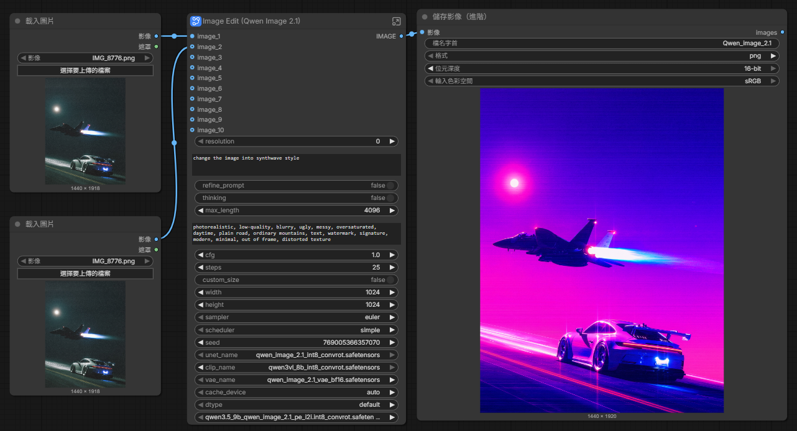

第一次使用這種自由度很高的生圖工具，而且模型是本地的所以不會有token限制，但是受限的是本地端的硬體效能。一開始我先把提示詞下的比較完整精確，發現這個模型對於比較多的提示詞反而會有反效果，所以我把正面提示詞變精簡後有感覺到效果有明顯提升。途中也有嘗試把refine_prompt跟thinking打開，發現生成出來的圖片變得比較模糊，生成的時間還比原本多上許多，不太符合效益所以在後面生圖的就把這兩個功能關閉。但是提示詞不精確的缺點也很明顯，生成出來的片像是重新上色而已，並沒有太多改變的地方，不過整體來說是滿意的。